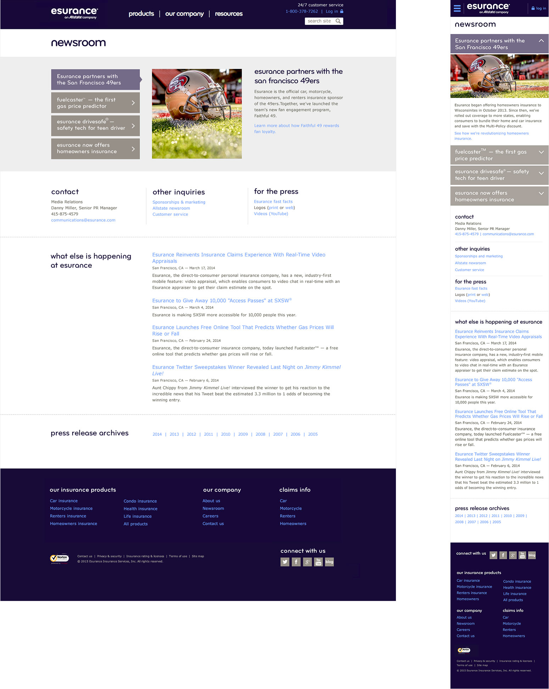
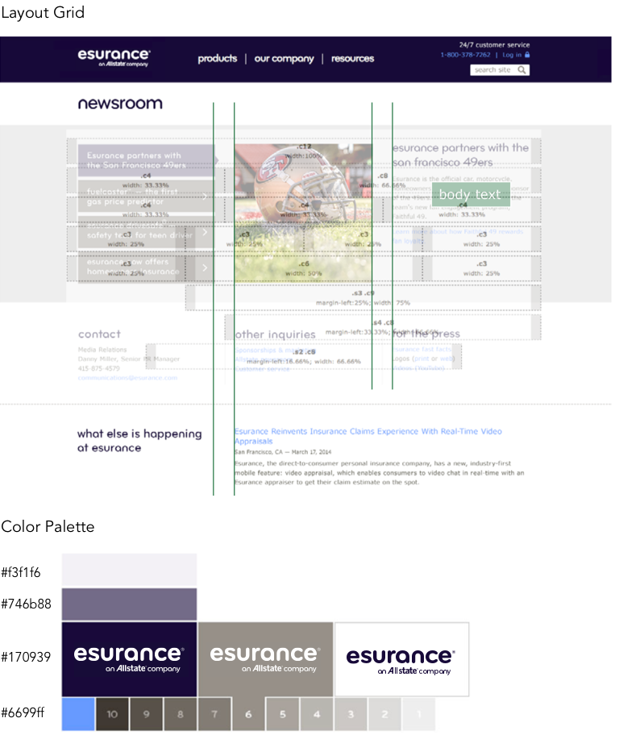

Client: AllState | Category: UI/UX Design
Esurance is an insurance company that sells auto, home, motorcycle, and renters insurance, using the latest technology to make the customer’s experience flawless.
The main objectives for redesigning the Esurance website were to increase quote initiation rate and customer retention. For this the UI/UX team focused on developing a modern design, a clear and concise information architecture, straight forward usability, brand voice and tone which supported the bold, self-confident and savvy brand identity.
 User Testing can go a long way especially when it comes to retrieving early feedback. By making iterations early on with real data, we were able to progress with no major setbacks and continue quickly moving forward as this was a full site redesign and meeting deadlines was a priority.
Our reasoning to carry out user testing on our wireframes were:
As stated above, we performed user testing sessions from the very beginning. This gave us the advantage of making the necessary iterations at early stages, which gave us enough time to develop what was essential for a successful website redesign.
The overall website redesign presents now: